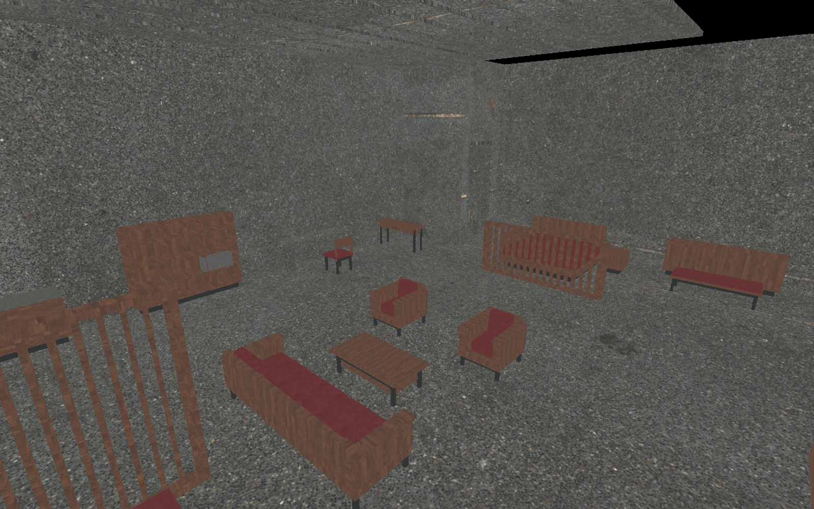
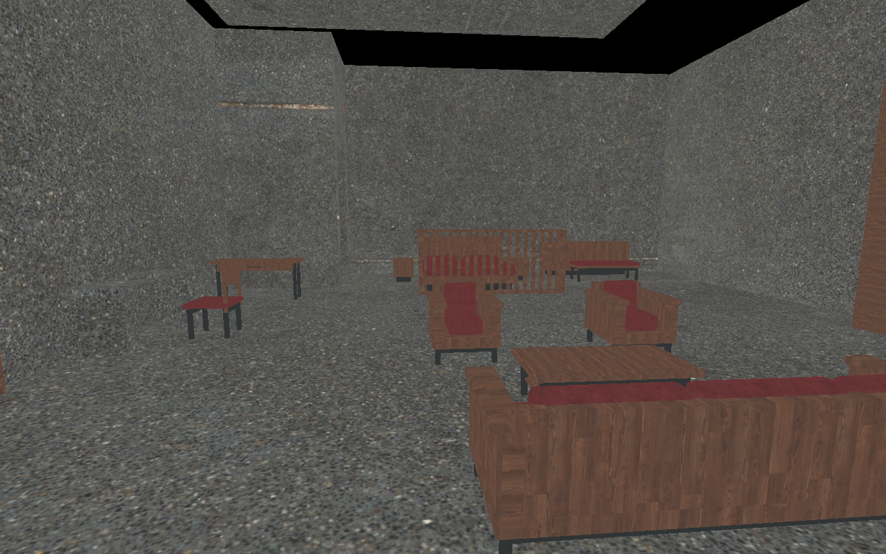
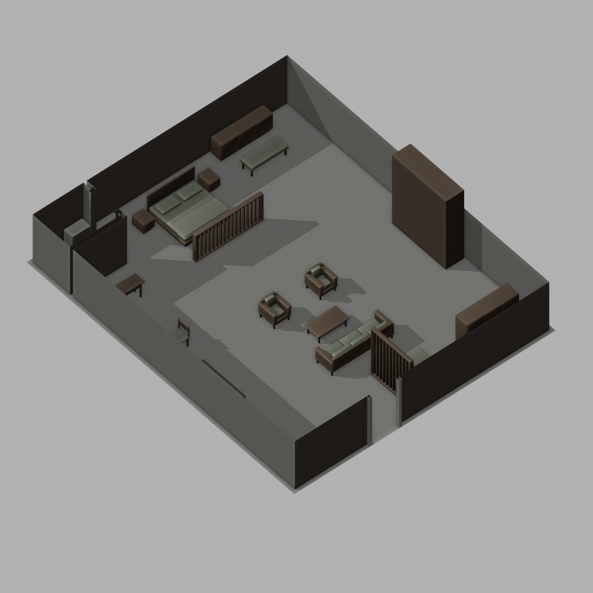
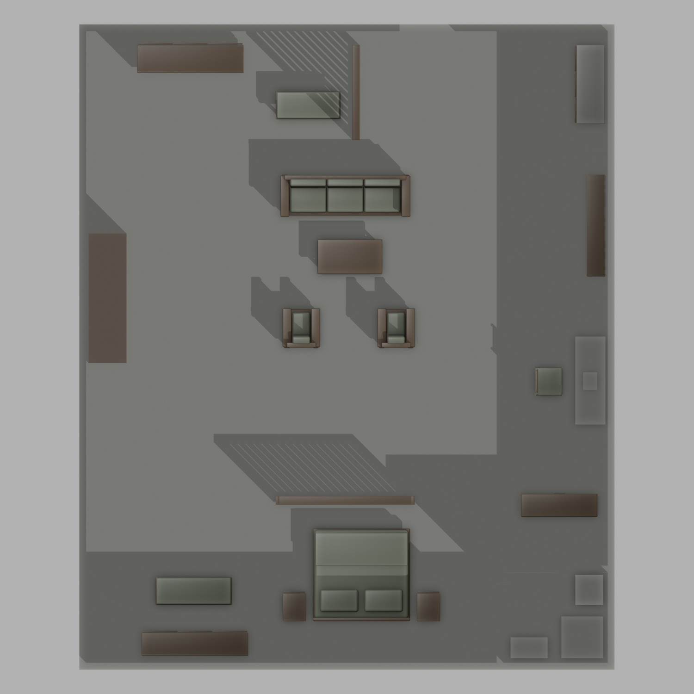
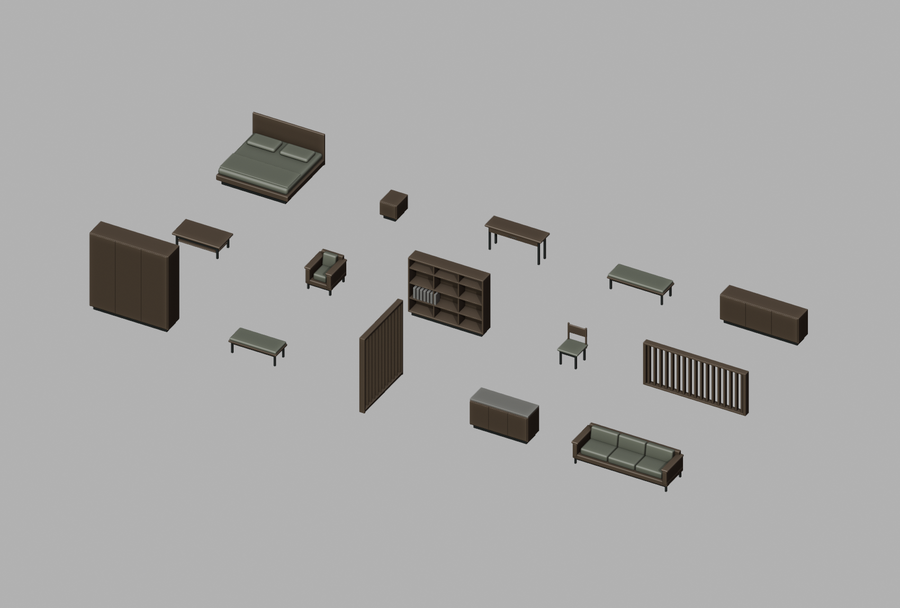

V55 / PERSISTENT LEVEL / 已保存
307 酒店客房
家具建模与空间深化已落地
此前 V50 是平面深化方案。本轮已按当前关卡实测，将玄关、会客、睡眠、更衣收纳落实到 307 任务客房；房间净尺寸约 11.27 × 13.65 m。
15独立家具款式
17家具摆放实例
36家具部件网格
41已落位组件 Actor
在当前工程中找到它
工程：DSH_Standalone.uproject
主关卡：/Game/DSH_交互/V44_建筑制图监控/Maps/Main_World2_MonitorArchitectural
UE 资产目录：/Game/DSH_HotelDetail/V55_Furniture
Outliner 目录：DSH_HotelDetail/V55/307_Furniture
分组：GROUP_H55_307_HotelFurniture。搜索该名称，选中后在视口按 F 聚焦。
当前酒店 Actor 为 dongshuhe_F3。它已改用独立网格 SM_H55_HotelShell307，位置、旋转、缩放与整层外包尺寸保持原值。
实际 UE 预览

当前工程内实际画面，Unlit 模式，用于检查摆放与材质分配。木材、酒红色布艺、深色金属和混凝土均复用现有材质；本轮没有创建或修改 UE 材质，没有调整现有灯光。
入口方向：会客组合、任务书桌、低格栅寝区分隔。保留原建筑围护与吊顶状态。
布局与建模预览

Blender 剖切模型预览，使用中性色示意材质辅助阅读空间；颜色不代表 UE 最终材质。剖切仅用于预览，未在 UE 拆除围护墙。展开俯视布置与家具模型库


玄关增设衣帽柜、换鞋行李凳、透光屏风和茶水柜；会客区采用三人沙发、两把扶手椅与低茶几；寝区采用低屏风、双人床和床头柜；补齐梳妆、更衣和布草收纳。原任务书桌、书本、卫生间设施、可移动机关柜及隐藏门洞保留。
替换范围与检查结果
仅在酒店网格的独立副本中移除 307 房的 16 个旧家具占位部件（240 个三角面），再替换 Persistent Level 中的酒店实例。原网格不覆盖，其他成员的 Level 不编辑、不保存。
Maya 清理后：36 个部件网格，合计 17,642 个多边形面；开放边、非流形边/点、零面积面、单面散片均为 0。板件与软包按实际构件保留封闭壳体，构件内部共享顶点；清理重合点、统一法线并整理 UV，没有用逐面独立网格堆成家具。
UE 导入尺寸核对通过，家具相互及保留设施的平面占位无重叠，机关柜向南 3.8 m 的移动预留区未被新家具占用。入口到任务书桌、机关柜、床侧、卫生间的 36 段胶囊体检测无阻挡，5 个站位检测到地面；沙发、衣柜、床的阻挡对照测试有效。检测胶囊半径 34 cm、半高 88 cm。
已核对 8 个子关卡文件、原酒店网格、原机关柜及 4 份复用材质的 SHA-256，均与本轮修改前一致。检查结束时无脏关卡包。
本次完成的是家具建模、静态布局与编辑器碰撞检查。尚未进行完整 PIE 任务通关验证；任务机关蓝图与监控系统未在本轮修改。
源文件与交接
全部本轮源文件、FBX、预览、执行脚本和审查记录均位于本工程的 DesignWork/V55_HotelDetail。UE 新网格集中在同一资产目录，材质依赖也在本工程内。若只迁移本轮资产，使用 UE 的 Migrate 同时带上复用材质依赖；仅复制本页所在目录不会包含 UE 关卡资产。
家具摆放清单（平面占位单位 m）
| 编号 | 家具 | 宽 × 深 | 模型 |
|---|
| 01 | 入户衣帽柜 | 2.30 × 0.60 | H55_EntryWardrobe |
| 02 | 换鞋／行李凳 | 1.40 × 0.60 | H55_LuggageBench |
| 03 | 玄关透光屏风 | 0.16 × 2.05 | H55_EntryScreen |
| 04 | 茶水／小冰箱 | 0.60 × 1.70 | H55_TeaCabinet |
| 05 | 三人沙发 | 2.80 × 0.90 | H55_Sofa |
| 06 | 低茶几 | 1.40 × 0.75 | H55_CoffeeTable |
| 07 | 扶手椅A | 0.80 × 0.85 | H55_Armchair |
| 08 | 扶手椅B | 0.80 × 0.85 | H55_Armchair |
| 09 | 书架／展示柜 | 0.40 × 2.20 | H55_Bookcase |
| 11 | 书桌椅 | 0.65 × 0.65 | H55_DeskChair |
| 12 | 寝区低屏风 | 3.00 × 0.18 | H55_SleepScreen |
| 13 | 双人床 | 2.10 × 2.00 | H55_DoubleBed |
| 14 | 床头柜A | 0.50 × 0.60 | H55_Bedside |
| 15 | 床头柜B | 0.50 × 0.60 | H55_Bedside |
| 16 | 梳妆台 | 1.65 × 0.50 | H55_Vanity |
| 17 | 更衣长凳 | 1.65 × 0.60 | H55_DressingBench |
| 18 | 布草矮柜 | 2.30 × 0.50 | H55_LinenCabinet |
验证记录与回退信息
实际落位与保存记录 · Maya 拓扑检查 · 尺寸与平面净空检查 · UE 碰撞及保护文件核对
本轮前的磁盘主地图备份：Backup/Main_World2_before_V55.umap。若需要撤回，仅处理本轮 H55 分组与酒店实例的网格引用；不要覆盖其他成员 Level。当前文档不自动执行任何回退。